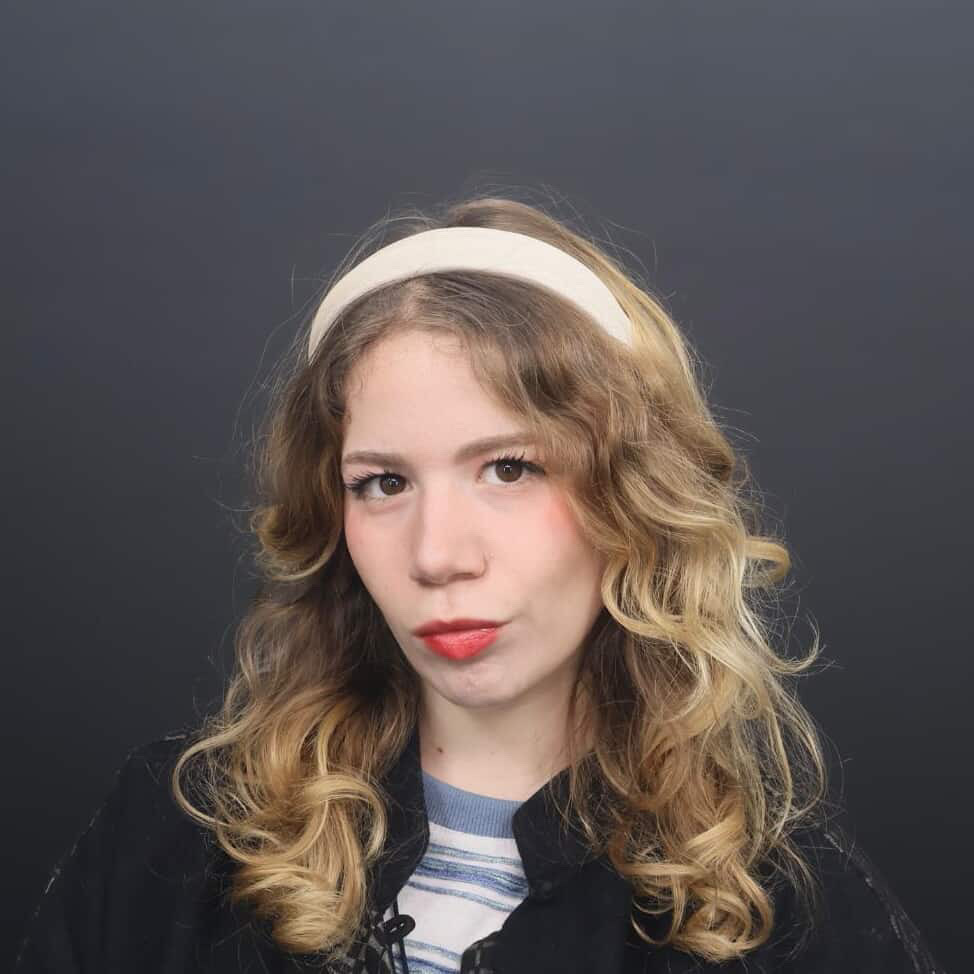

We move beyond stereotypes to explore China's history, culture, politics and economy, connecting students with global voices on China.
The King's China Studies Society, supported by the Lau China Institute.
With Joydeep Sengupta · Shapers and Founders.
Free · Sign-up required · Thursday 8 October 2026, 6:00–8:30 pm. Venue details are available when you register.
Register on EventbriteIt's where students go beyond stereotypes to understand China's history, culture, politics, economy and global influence, through genuine student perspectives.
We create spaces to learn, explore, discuss, meet people, and share perspectives on China — whether you specialise in China studies or are simply curious about its role in our globalised world.

Mariam BenamerPresident and Editor-in-ChiefInterested in joining the team? Get in touch
The Lau China Institute is pleased to support this China-focused student society at King's College London. China is the most important geopolitical issue of our time, and promoting deeper, more diverse understanding of all related issues is both welcome and necessary. Professor Kerry Brown, Director of the Lau China Institute
Got a perspective on China's politics, economy, culture or history? We're always looking for new student voices, whether it's your first piece or your fifth.